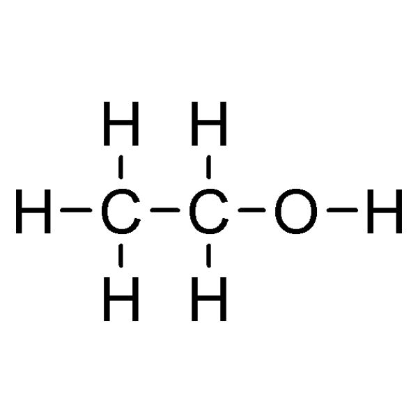
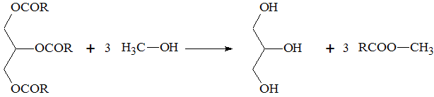

Biocombustíveis são derivados de biomassa renovável que podem substituir, parcial ou totalmente, combustíveis derivados de petróleo e gás natural em motores a combustão ou em outros tipos de geração de energia.
Os dois principais biocombustíveis líquidos usados no Brasil são o etanol, obtido a partir da cana-de-açúcar, e, em escala crescente, o biodiesel, produzido a partir de óleos vegetais ou de gorduras animais e adicionado ao diesel de petróleo em proporções variáveis.
Cerca de 45% da energia e 18% dos combustíveis consumidos no Brasil já são renováveis. No resto do mundo, 86% da energia vêm de fontes não renováveis. Pioneiro mundial no uso de biocombustíveis, o Brasil alcançou uma posição almejada por muitos países que buscam fontes renováveis como alternativas estratégicas ao petróleo.
03.1O etanol
O etanol é representado pela fórmula C2H6O ou, de forma mais detalhada, CH3CH2OH. Ou seja, é formado por dois átomos de carbono (C) ligados a cinco átomos de hidrogênio (H) e a um átomo de oxigênio (O) ligado a outro hidrogênio. A presença do grupo OH (hidroxila) torna o etanol uma substância polar, com polos eletrônicos distintos na cadeia — algo possível graças ao oxigênio. Por isso, o álcool se mistura facilmente com a água e outros líquidos polares.
Entre os compostos químicos, o etanol é considerado orgânico, formado por cadeias de carbono. Isso faz com que ele seja encontrado mais facilmente nos estados líquido ou gasoso, ao contrário dos compostos inorgânicos, como os minerais, que em seu estado natural costumam ser sólidos.

03.2Biodiesel
O biodiesel é um biocombustível líquido considerado uma fonte de energia renovável, que substitui o uso de combustíveis fósseis.
É produzido a partir de fontes vegetais ou animais. Por isso, é um produto natural e biodegradável, com baixo teor poluente. Representa uma alternativa para substituir os combustíveis derivados do petróleo, que são poluentes.
A produção de biodiesel é realizada pela mistura de óleo vegetal ou gordura animal com metanol ou etanol, na presença de um catalisador. Esse processo é chamado de transesterificação.
Os óleos e as gorduras são constituídos principalmente por triglicerídeos, que possuem três longas cadeias de ácidos graxos ligados a uma molécula de glicerina.
